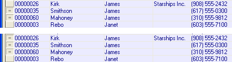

<TBL>.MARK_DUPS()
Syntax
<TBL>.MARK_DUPS( Duplicate_Key_Expression as C [, Filter as C ] )
|
Argument |
Description |
|
Duplicate_Key_Expression |
A field or a combination of fields that Alpha Anywhere uses to determine which records in the table are considered duplicates. |
|
Filter |
Optional. Default = .T. (all records). A character filter expression that specifies which records to check for duplicates. |
Description
The <TBL>.MARK_DUPS() method is a high-level utility method you use to mark duplicate records in a table.
A Duplicate_Key_Expression is a field or a combination of fields that Alpha Anywhere uses to determine which records in the table are considered duplicates. For example, if you consider a record with the same values in the Firstname, Lastname and Address1 fields to be a duplicate, the Duplicate Key Expression would be: Firstname + Lastname + Address1.
In order to mark a subset of duplicate records, you can add a filter expression to the script. Only records that satisfy the filter are checked for duplicates. If no Filter is specified, then all records are checked for duplicates, regardless of any query that might currently be applied to <TBL>.
 Note : If you are marking
records in a set with one-many child links off the parent table in which
you are marking records, remember that if referential integrity is enabled,
marking a parent record will result in all matching child records being
marked as well.
Note : If you are marking
records in a set with one-many child links off the parent table in which
you are marking records, remember that if referential integrity is enabled,
marking a parent record will result in all matching child records being
marked as well.
<TBL>.MARK_DUPS()selected records in the top picture and <TBL>.MARK_DUPS2() selected the records in the bottom picture. In both cases the query was against the AlphaSports customer table, looking for records where the Firstname field contained the value "James".

Example
This script marks all duplicate records (not including the first record) in the current table that have the same PROD_ID field.
|
dim tbl as P tbl = table.current() tbl.mark_dups("PROD_ID") |
This script marks all duplicate records (not including the first record) with PRICE > 100 in the current table that have the same PROD_ID field.
|
dim tbl as P tbl = table.current() tbl.mark_dups("PROD_ID", "PRICE > 100") |
See Also
Table Functions and Methods, Writing Expressions